10 部片单 · 恐怖 / 科幻 / 惊悚 / 悬疑 / 剧情
| # | 片名 | 类型 | 评分 / 状态 |
|---|---|---|---|
| 01 | 侏罗纪公园 | 科幻 / 惊悚（美国 · 一座不该建成的公园） | 8.2 / 91% / 68 |
| 02 | 罗拉快跑 | 惊悚 / 剧情（德国 · 二十分钟跑三遍） | 8.1 / 93% / 7.7 |
| 03 | 记忆碎片 | 悬疑 / 惊悚（美国 · 一个只有十分钟记忆的人） | 8.7 / 93% / 83 |
| 04 | 老男孩 | 悬疑 / 惊悚（韩国 · 十五年，五天） | 8.2 / 82% / 78 |
| 05 | 窃听风暴 | 剧情 / 惊悚（德国 · 一个监听者） | 9.2 / 92% / 89 |
| 06 | 追击者 | 惊悚 / 犯罪（韩国 · 抓到了，然后放走了） | 8.4 / 82% / 7.8 |
| 07 | 龙纹身的女孩 | 悬疑 / 惊悚（美国 / 瑞典 · 四十年前消失的女孩） | 8.0 / 86% / 71 |
| 08 | 釜山行 | 恐怖 / 惊悚（韩国 · 首尔到釜山 453 公里） | 8.5 / 94% / 7.6 |
| 09 | 降临 | 科幻 / 悬疑（美国 · 一种会改变时间感的语言） | 7.8 / 94% / 81 |
| 10 | 水形物语 | 科幻 / 剧情（美国 · 1962 年，一个不会说话的女人） | 7.2 / 92% / 87 |
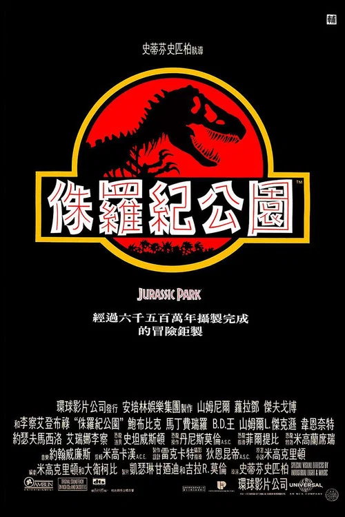
侏罗纪公园 Jurassic Park
「生命会自己找到出路。」
剧情梗概
富豪哈蒙德在一座孤岛上建成了世界上第一座恐龙主题公园，用的是琥珀里史前蚊子吸过的血。开园前他请来古生物学家格兰特、植物学家塞特勒和数学家马尔科姆做安全评估——一夜停电之后，围栏失效，霸王龙走了出来，两个孩子被困在观光车里。
亮点
- 斯皮尔伯格执导，改编自迈克尔·克莱顿的同名小说；第 66 届奥斯卡三项获奖：最佳视觉效果、最佳音效剪辑、最佳混音。
- 全片恐龙的 CGI 镜头加起来只有约 6 分钟，其余全部由斯坦·温斯顿工作室的实体动画模型完成——霸王龙是 1:1 的液压装置。
- 全球票房约 9.2 亿美元，是当时影史票房冠军；工业光魔为这片第一次真正做出了「可信的皮肤与肌肉」。
- 杯子里的水面涟漪、厨房里的迅猛龙这两个著名镜头，都是靠现场低频震动和低音实现的，没有加特效。
- 它同时也是一部恐怖片：《大白鲨》之后斯皮尔伯格最会「先不给看，再给看」的一次。
- 烂番茄 91% / Metacritic 68——观众与影评界的落差一直存在，主要批评是人物偏薄。
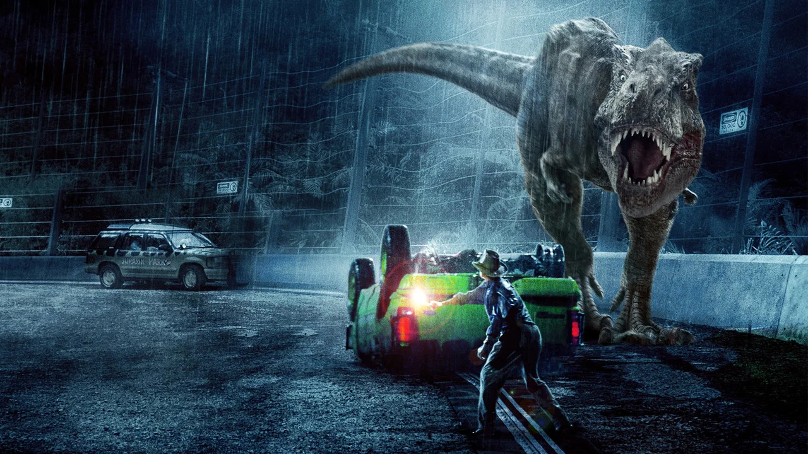
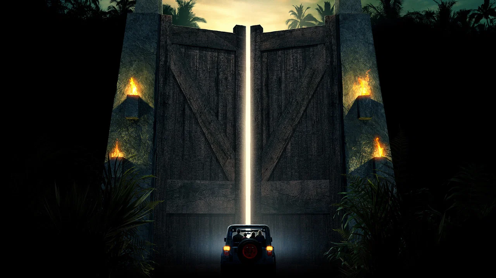
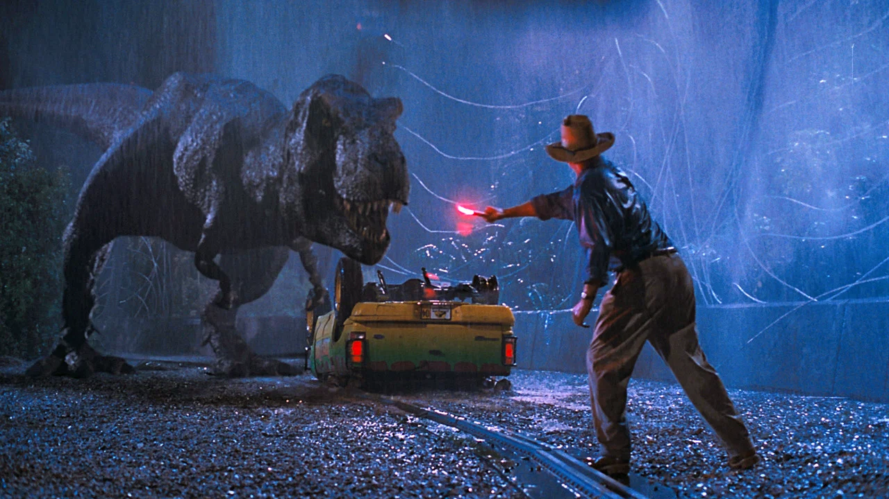
导演与主创 · 他们的历史作品

 辛德勒的名单
辛德勒的名单 拯救大兵瑞恩
拯救大兵瑞恩 猫鼠游戏
猫鼠游戏 头号玩家
头号玩家
 侏罗纪公园3
侏罗纪公园3 追捕野蛮人
追捕野蛮人 战栗黑洞
战栗黑洞 侏罗纪世界3
侏罗纪世界3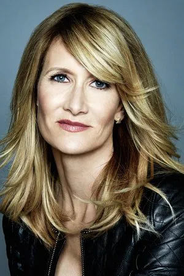
 婚姻故事侏罗纪世界3
婚姻故事侏罗纪世界3短评（轻微剧透）
《侏罗纪公园》真正的转折不在恐龙逃出来，在马尔科姆那句「你们先想着能不能做到，从来没想过该不该做」。轻微剧透：斯皮尔伯格很聪明地在前一小时里把恐龙当成奇迹拍——雾气、雨水、第一次看见腕龙时所有人仰头的那场戏，配乐几乎停掉；等栅栏一倒，同一批镜头全部翻成了追杀。它最厉害的地方是节奏：孩子被困在车里、车顶慢慢被压扁、后视镜里出现那只眼睛，观众知道会发生什么，还是被吓到。结尾救下他们的不是人类，而是那头霸王龙——这个设计在 1993 年是反套路的。
为什么值得一看
想找「科幻惊悚」这一支起点的人；适合还没看过、或者只在小时候看过一遍的观众。含恐龙撕咬与儿童受威胁场面，惊吓以氛围为主，血浆很少。内地未引进，流媒体可看。看完想继续：《侏罗纪世界》《大白鲨》《异形》。
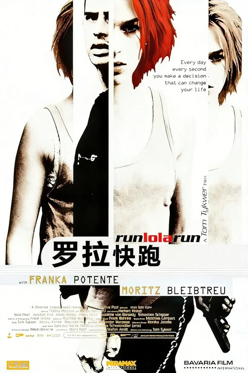
罗拉快跑 Run Lola Run
「我们只是走在前面，却不知道终点在哪。」
剧情梗概
曼尼弄丢了老大的十万马克，二十分钟内筹不到钱就会被杀。他打电话给女友罗拉。挂断之后，罗拉冲下楼梯，开始跑——同一段二十分钟，电影跑了三遍。每一次路上遇到的人多一句或少一句，结局就完全不同。
亮点
- 汤姆·提克威自编自导，成本约 175 万马克；全片几乎是一部由高速剪辑和电子乐驱动的八十分钟长镜头错觉。
- 三段结构各给一个结局，中间穿插红被子里的那段对话，是 90 年代被模仿最多的段落之一。
- 动画段落、跳切、快动作与照片闪回混剪，把「一个人的一生」压在几秒之内讲完。
- 配乐由提克威与 Johnny Klimek、Reinhold Heil 共同完成，当年单独发行过原声碟。
- 弗朗卡·波滕特凭此片一夜成名，她的红发成为 90 年代德国电影的符号之一。
- 烂番茄 93%（样本 83 篇）/ 豆瓣 8.1；争议主要在「形式大于内容」。
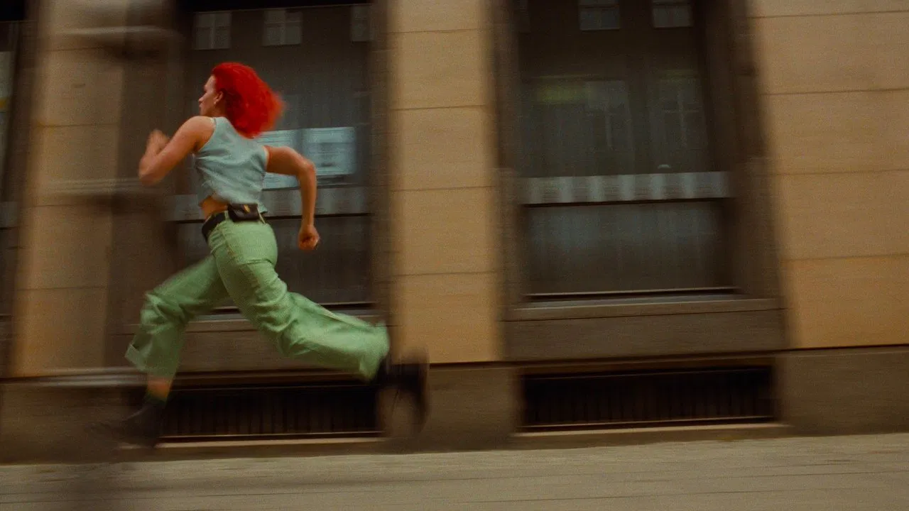
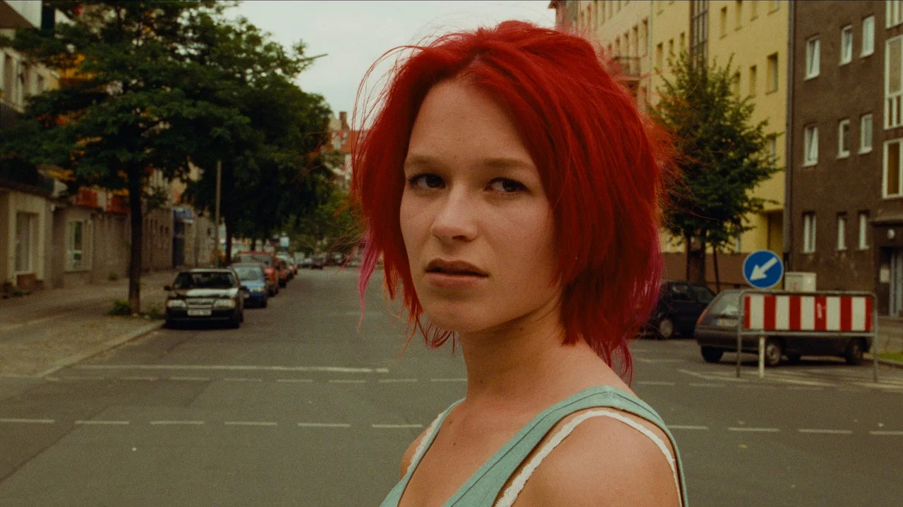
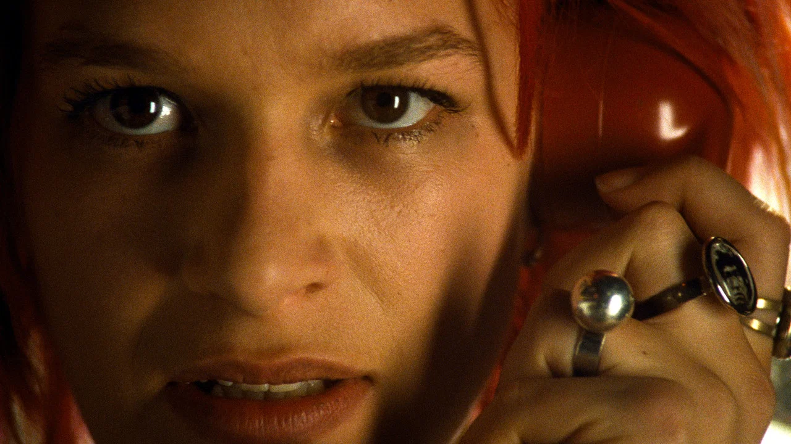
导演与主创 · 他们的历史作品

 云图
云图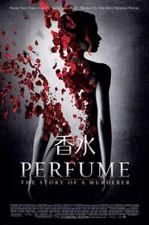
香水 跨国银行
跨国银行 国王的全息图
国王的全息图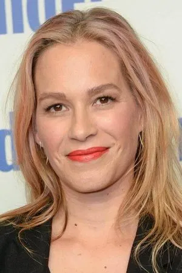
 谍影重重
谍影重重 谍影重重2
谍影重重2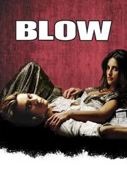
大毒枭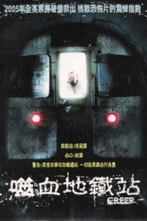
地铁惊魂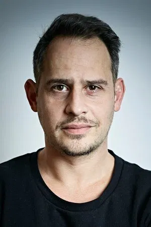
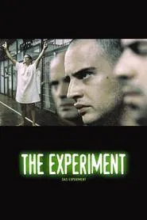
死亡实验 僵尸世界大战
僵尸世界大战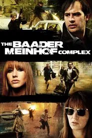
巴德尔和迈因霍夫集团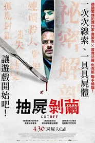
孤立短评（轻微剧透）
轻微剧透：真正的转折在第二次跑。罗拉抢了超市、拿了钱，赶到时曼尼已经被警车撞死——这一条命直接作废，导演连情绪都不给你消化，立刻重开。提克威把「人生由偶然构成」拍成了物理规则：路人脚下多迈半步、狗叫一声、保安抬一下手，结局就翻面。它看起来是爱情片，其实讲的是「你以为的选择，有多少是被时间推着走的」。最后她在赌场赢到十万马克那一段最不真实，也最必要——因为三遍里唯一变了的，是她不再只是在跑。
为什么值得一看
想看 90 年代最「燃」的实验片、也是非线性叙事最易入口的一版的人；适合想一口气看完 80 分钟的观众。含枪击与死亡场面，暴力程度低，节奏极快。内地未映，流媒体可看。看完想继续：《云图》《滑动门》《蝴蝶效应》。
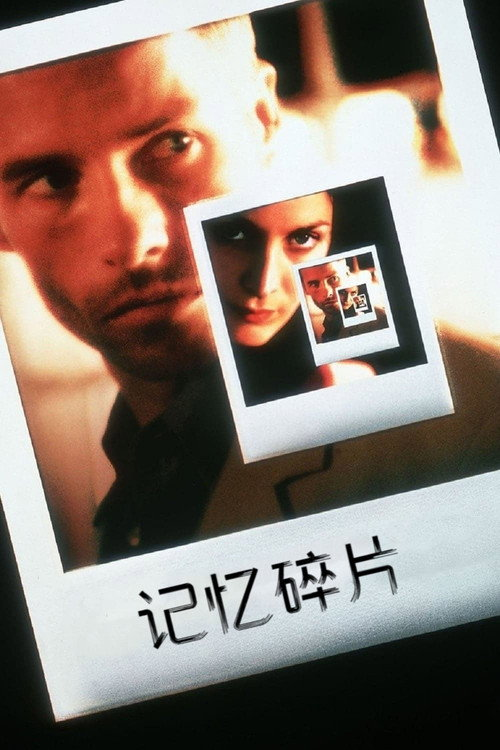
记忆碎片 Memento
「我要相信这个世界不是我想象出来的。」
剧情梗概
莱纳德的妻子被人杀害，他自己也在那晚脑部受伤，从此无法形成新的记忆——每十分钟清零一次。他靠纹身、便签和宝丽来照片继续追凶。彩色段落倒着放，黑白段落正着放，两条线在中间汇合。
亮点
- 诺兰第二部长片，改编自弟弟乔纳森·诺兰的短篇《Memento Mori》；成本约 900 万美元。
- 第 74 届奥斯卡最佳原创剧本、最佳剪辑两项提名；圣丹斯电影节编剧奖。
- 倒叙 + 正叙双线是它的全部发明：观众和主角一样，永远不知道上一分钟发生了什么。
- 盖·皮尔斯的表演是整部片的中轴——他必须让「刚认识你」和「我好像见过你」在同一张脸上同时成立。
- 2026-05-29 首次登陆内地院线，是全球首次量身定制的 IMAX 版本，距威尼斯首映整整 26 年。
- 烂番茄 93% / Metacritic 83 / 豆瓣 8.7，二十多年口碑几乎没有下滑。
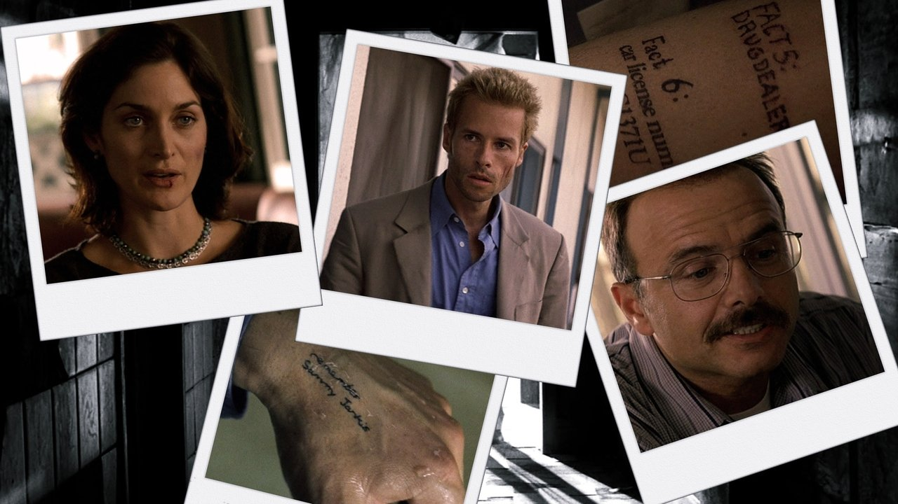
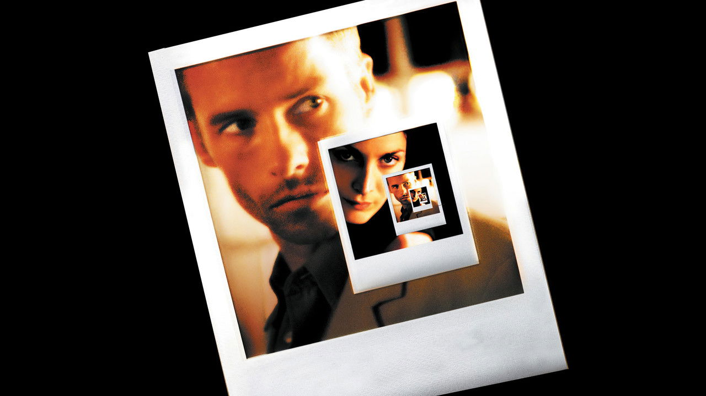
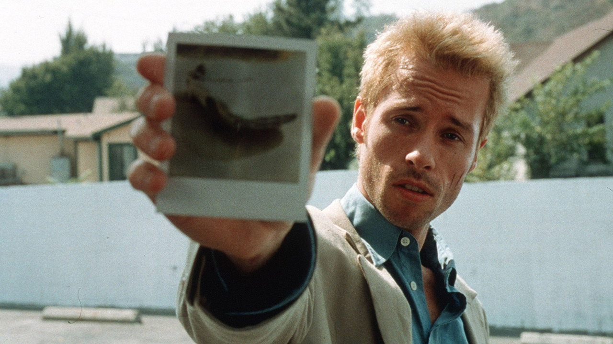
导演与主创 · 他们的历史作品

 星际穿越
星际穿越 盗梦空间
盗梦空间 蝙蝠侠：黑暗骑士
蝙蝠侠：黑暗骑士 蝙蝠侠：黑暗骑士崛起
蝙蝠侠：黑暗骑士崛起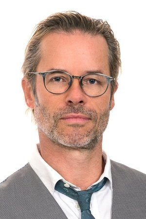
 钢铁侠3
钢铁侠3 普罗米修斯
普罗米修斯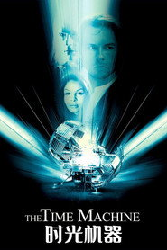
时间机器 国王的演讲
国王的演讲
 黑客帝国
黑客帝国 黑客帝国2：重装上阵
黑客帝国2：重装上阵 黑客帝国3：矩阵革命
黑客帝国3：矩阵革命 黑客帝国4：矩阵重启
黑客帝国4：矩阵重启短评（轻微剧透）
轻微剧透：真正的转折在黑白段落的最后一通电话。莱纳德问的那句「你有没有告诉过我……」，答案是不只告诉过，是他自己让人家别再提。诺兰真正拍的不是失忆，是「一个人为了活下去需要多少自我欺骗」——他给自己造了一个永远追不完的凶手，因为追完就没事可做了。泰迪那句「你只记得你想记得的」是全片的钥匙；而他最后把泰迪的名字写进了名单，不是因为真相，是因为他需要一个名字。这部片看第二遍会更冷：所有你以为的线索，都是他自己放上去的。
为什么值得一看
想体验「观众被设计进主角处境」的人；喜欢结构型悬疑、愿意看两遍的观众。含暴力、枪击与性侵暗示，无大尺度画面；信息量大，建议一次看完不要中断。内地 2026-05-29 公映过 IMAX 版，流媒体可看。看完想继续：《盗梦空间》《十二宫》《致命魔术》。
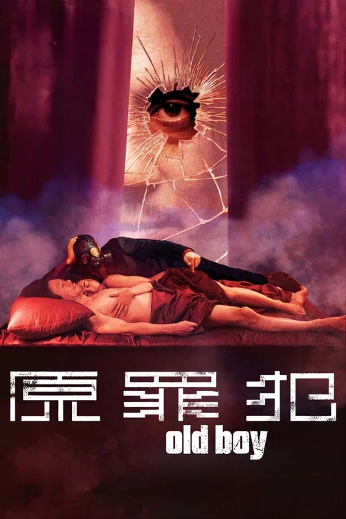
老男孩 Oldboy
「就算我是禽兽，难道就没有活下去的权利吗？」
剧情梗概
吴大修在女儿生日那天醉酒回家，被人绑走。他在一间没有窗的房间里被关了十五年——三餐是煎饺，唯一的信息来源是电视。某天他突然被放出来，口袋里有钱和手机。他只有五天：找出谁关了他，为什么。
亮点
- 朴赞郁「复仇三部曲」第二部，改编自日本漫画《铁汉强龙》；成本约 300 万美元。
- 第 57 届戛纳评审团大奖（那年的评委会主席是昆汀·塔伦蒂诺）；2005 年香港电影金像奖最佳亚洲电影。
- 走廊锤子长镜头：侧跟拍、一镜到底、一把锤子打十几个人，是 2000 年代被致敬最多的动作段落之一。
- 崔岷植为这个角色增重又减重，生吃章鱼那场戏是真的。
- 刘智泰演的反派几乎不抬高声调——他给了韩国惊悚片一个全新的「体面坏蛋」模板。
- 烂番茄 82% / Metacritic 78 / 豆瓣 8.2，是韩国电影进入 IMDb 前一百的早期代表作之一。
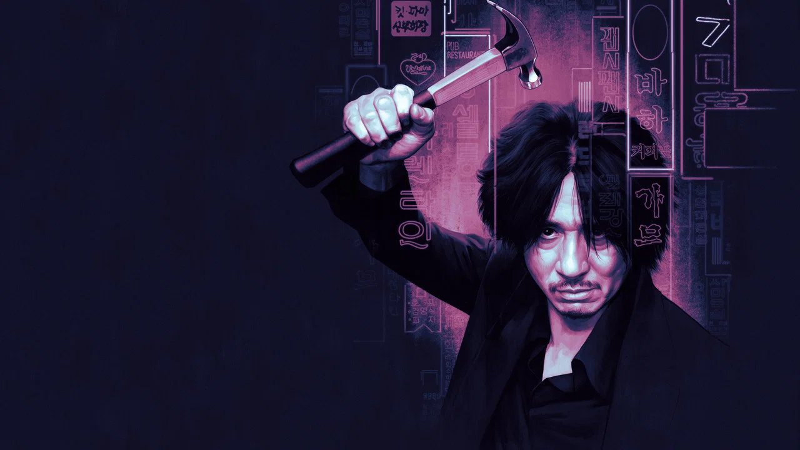
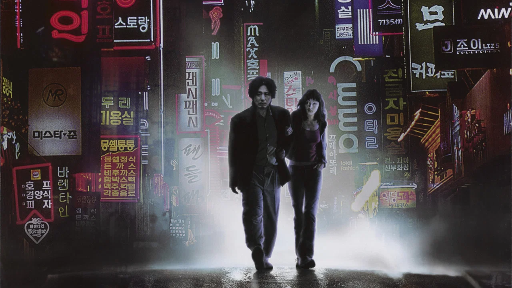
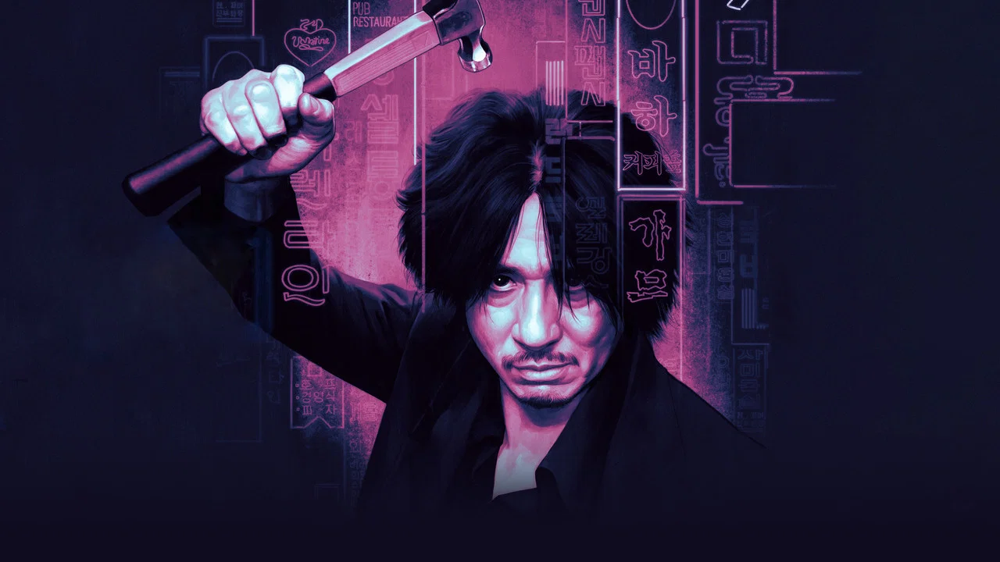
导演与主创 · 他们的历史作品

 小姐
小姐 斯托克
斯托克 亲切的金子
亲切的金子 我要复仇
我要复仇
 超体
超体 看见恶魔亲切的金子
看见恶魔亲切的金子 破墓
破墓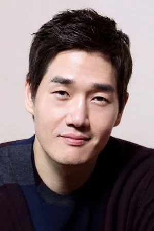
 此房是我造
此房是我造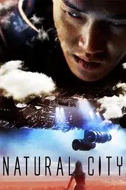
自然城市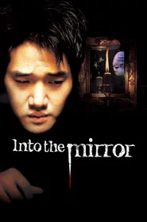
鬼镜亲切的金子短评（轻微剧透）
轻微剧透：真正的转折不是「谁关了他」，是「为什么关了他」。李宇镇花了十五年做一件事：让吴大修亲口说出那句话，然后让他亲身体会那句话的重量。整部片的复仇不是对称的，是镜像的——你以为在往外走，其实一直在往原点走。最后那场戏是催眠：他选择删掉真相，因为知道真相的人已经不再是他了。朴赞郁最狠的一点在于他让主角「赢」了，而这份赢的代价，是永远不知道自己救下的到底是什么。
为什么值得一看
想看亚洲惊悚片天花板的人；能接受强暴力、乱伦与自残等重口设定的观众（18+）。含活章鱼、拔牙、暴力群戏，心理冲击大于血腥。内地未映，流媒体可看。看完想继续：《亲切的金子》《我要复仇》《哭声》。
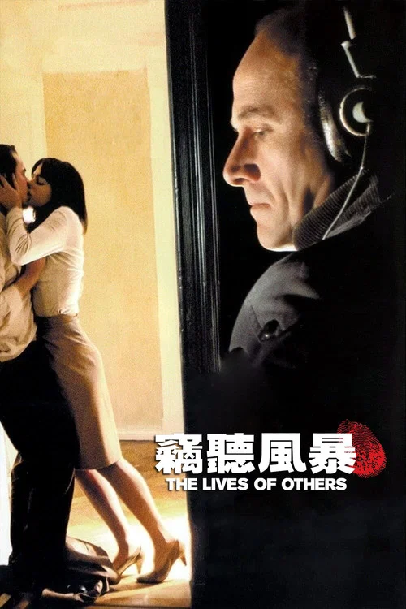
窃听风暴 The Lives of Others
「这是献给好人的奏鸣曲。」
剧情梗概
1984 年的东柏林，史塔西特工维斯勒负责监听剧作家德雷曼和他的女友、演员西兰德。他坐在阁楼上，戴着耳机，把听到的每一句话打成报告。听着听着，他开始替他们隐瞒。
亮点
- 多纳斯马尔克的长片处女作，筹备九年；第 79 届奥斯卡最佳外语片，德国电影奖七项大奖。
- 全片没有追车、没有枪战，主要场景是阁楼、公寓和一台打字机——靠「听」推进。
- 乌尔里希·穆埃凭维斯勒拿下德国电影奖影帝；他本人的经历与角色之间有令人唏嘘的重叠。
- 片中大量细节考据自史塔西档案，片尾字幕写明档案编号与机构。
- 成本约 200 万欧元，全球票房约 7700 万美元，是当年最卖座的德语片。
- 豆瓣 9.2 / 烂番茄 92% / Metacritic 89，是本期评分最高的一部。
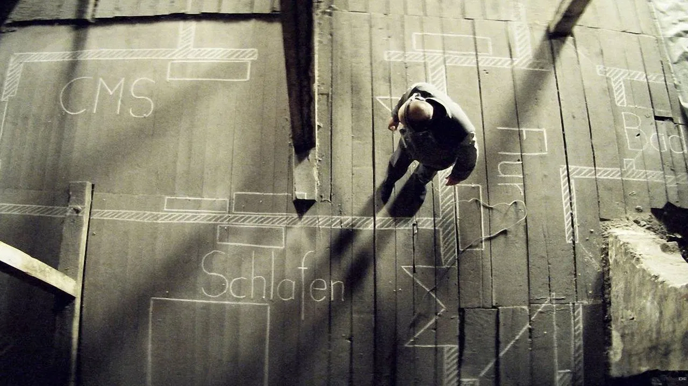
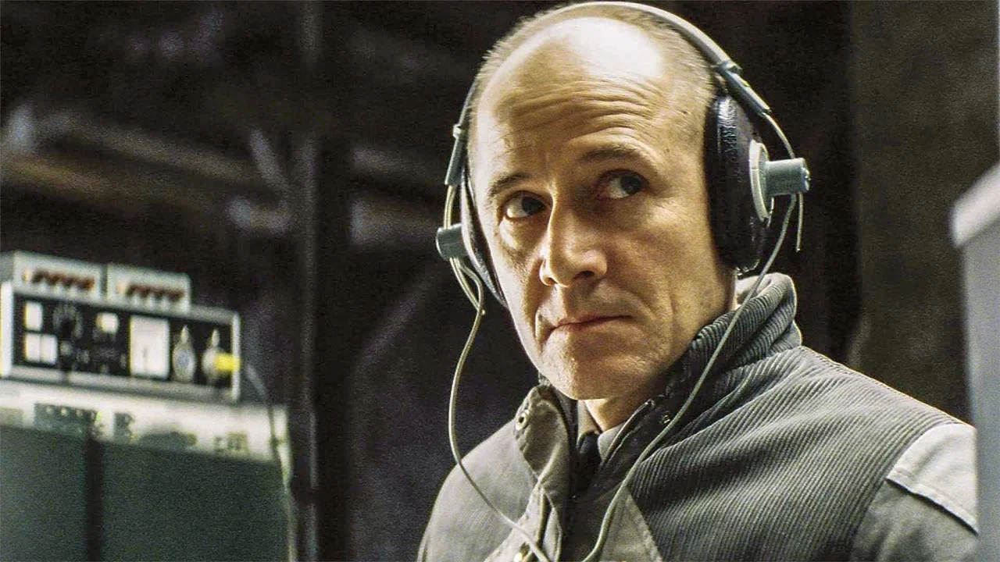
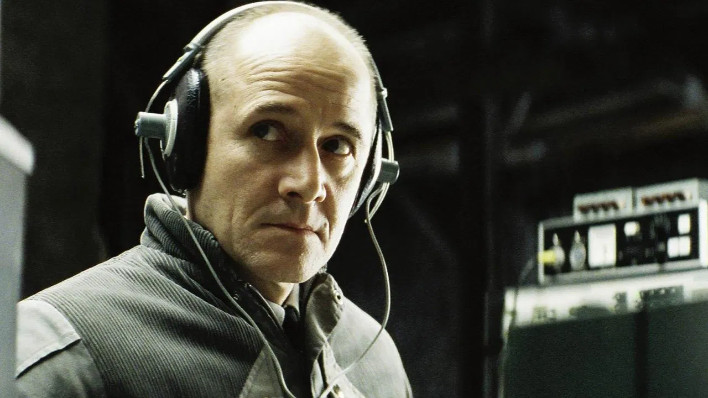
导演与主创 · 他们的历史作品
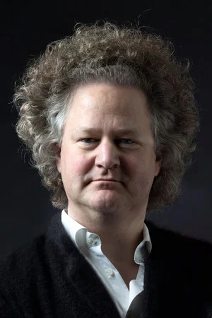
 致命伴旅
致命伴旅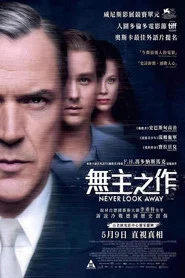
无主之作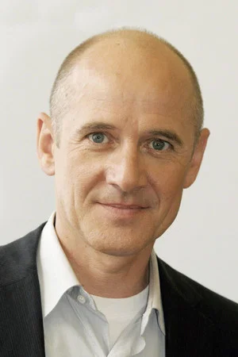
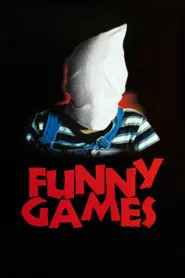
趣味游戏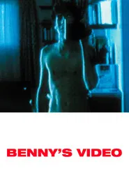
班尼的录像带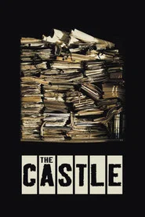
城堡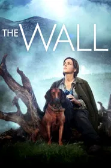
隐墙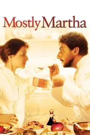
美味关系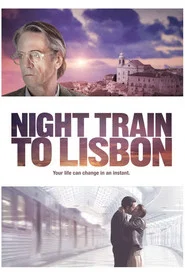
去里斯本的夜车短评（轻微剧透）
轻微剧透：真正的转折在阁楼。维斯勒第一次把报告里的关键信息删掉时，那不是良心发现，是好奇——他想知道这两个人在聊什么。多纳斯马尔克很克制地没有给他人性的高光，只给了一连串很小的动作：把书藏起来、把打字机搬走、在报告里写一句「没有异常」。结尾那句「这是给我的」，配合他买下的那本诗集，是全片唯一一次情绪外露，也是近二十年欧洲电影里最克制的一次落泪——他没有哭，只是说了一句「这是给我的」。它真正讲的不是东德，是「被看见」这件事本身怎么把人换掉。
为什么值得一看
想看「不靠特效、只靠人和台词也能让人喘不过气」的电影的人；喜欢《十二宫》《聚焦》这类冷静叙事的观众。无暴力血腥，含少量性暗示与裸体镜头；节奏舒缓，需要耐心。内地未映，流媒体可看。看完想继续：《无主之作》《巴德尔和迈因霍夫集团》《再见列宁》。
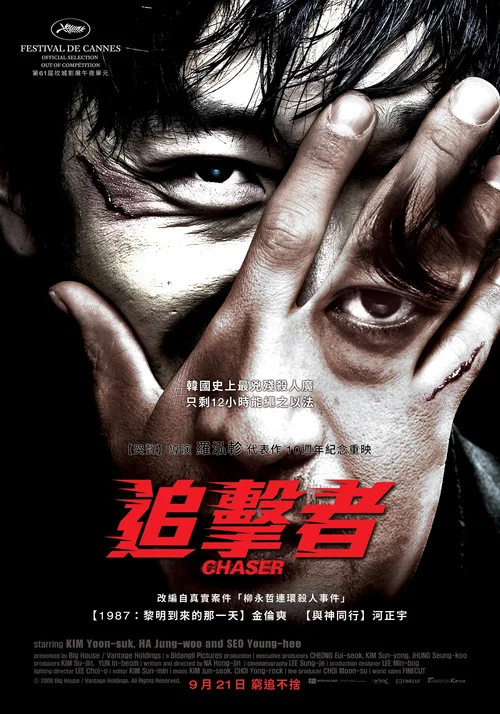
追击者 The Chaser
「我一定会找到她。」
剧情梗概
前刑警严忠浩改行做皮条客，手下的女孩接连失踪。他顺着同一个电话号码追到一个叫池英民的男人，一拳把人打进了警局。池英民在审讯室里轻松承认自己杀了人——但警方没有证据，媒体还等着抓另一条新闻。二十四小时里，能救人的只有他一个。
亮点
- 罗泓轸的长片处女作，故事取材自韩国柳永哲连环杀人案。
- 金允锡凭严忠浩拿下青龙奖、大钟奖等多个影帝；河正宇演的反派是全片最冷的部分。
- 全片不藏凶手——第一幕就告诉观众是谁，紧张感全部来自「能不能拿到证据」。
- 三条线（忠浩、凶手、受害者）平行剪辑，最后在便利店收口。
- 韩国分级 18 禁，上映首周仍突破百万观影人次，最终观影超 500 万。
- 烂番茄 82%（样本 34 篇）/ 豆瓣 8.4；罗杰·艾伯特称它「超越了通常的现代惊悚片水平」。
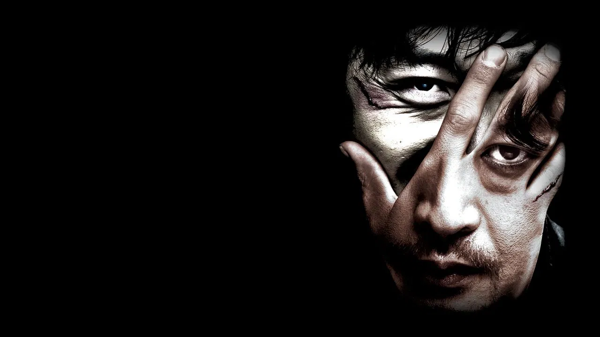
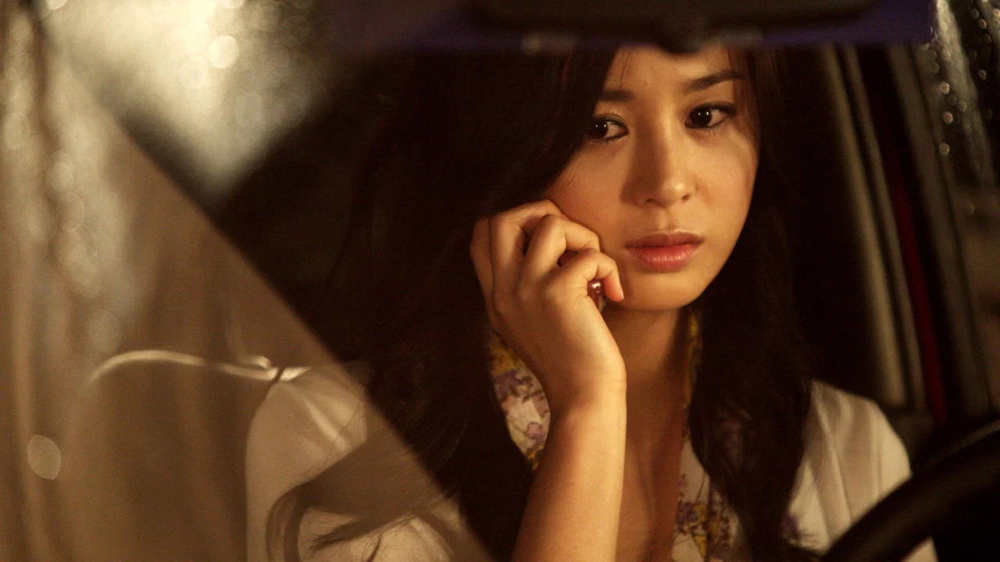
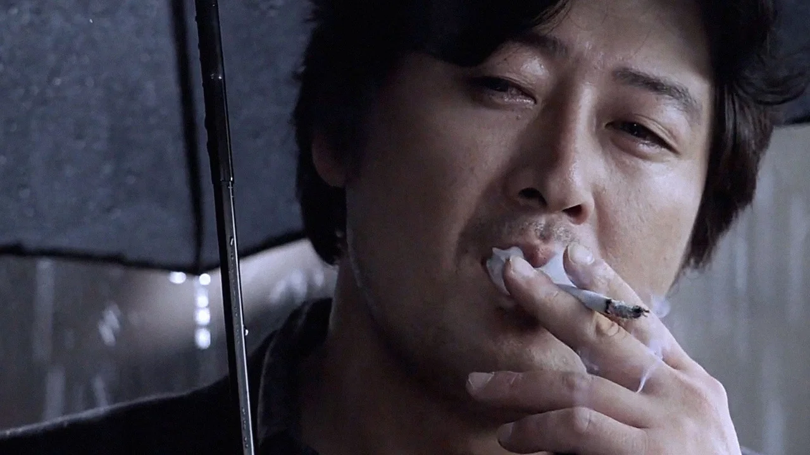
导演与主创 · 他们的历史作品

 哭声
哭声 黄海
黄海
 夺宝联盟黄海
夺宝联盟黄海 华颐：吞噬怪物的孩子
华颐：吞噬怪物的孩子 摩加迪沙
摩加迪沙 小姐
小姐 与神同行：罪与罚
与神同行：罪与罚 与神同行2：因与缘
与神同行2：因与缘 隧道
隧道短评（轻微剧透）
轻微剧透：真正的转折在审讯室之后。凶手认了罪，警察却在比对血迹、走流程、等上级签字——这一整段比任何追车都让人坐不住。罗泓轸做了一件很残酷的事：他让观众从头到尾都比角色知道得多。你看着美珍在浴室里挣脱、看着她在便利店打电话、看着凶手走进来，什么都做不了。最后忠浩举起锤子那一秒被拦下，不是因为他放弃了，是因为他终于变成了需要被拦住的人。这部片最冷的地方是结尾——他坐在病房里守着那个孩子，谁也没有赢。
为什么值得一看
想看「最不像类型片的类型片」的人；能接受写实暴力与压抑结局的观众（18+）。含凶案、锤击与血腥场面，暴力写实不美化。内地未映，流媒体可看。看完想继续：《黄海》《哭声》《杀人回忆》。
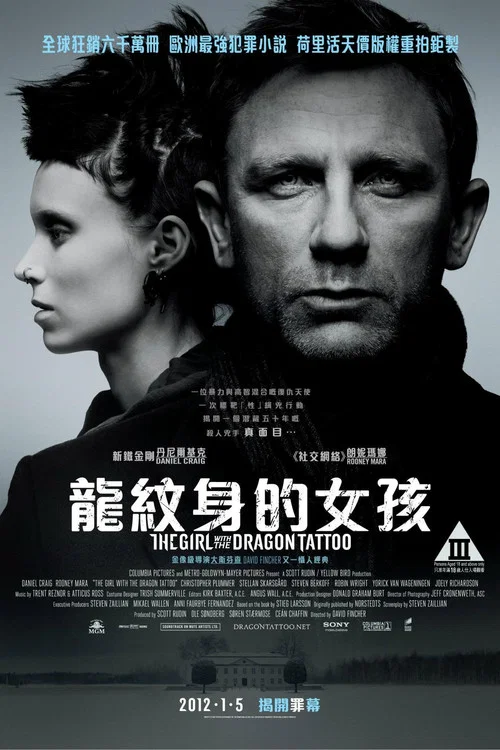
龙纹身的女孩 The Girl with the Dragon Tattoo
「藏在雪里的东西，等到解冻就会露出来。」
剧情梗概
《千禧年》杂志记者布隆克维斯特刚输掉一桩诽谤官司，被范耶尔家族的老掌门人请去调查一件事：四十年前，他最疼的侄女哈丽特在一座封闭的岛上消失了。帮他查案的，是一个满身穿孔、能入侵任何人电脑的女孩莎兰德。
亮点
- 大卫·芬奇执导，改编自斯蒂格·拉森「千禧年三部曲」第一部；成本约 9000 万美元。
- 第 84 届奥斯卡五项提名，拿下最佳剪辑；鲁妮·玛拉首次提名影后。
- 开场字幕由 Tim Miller 制作，是近二十年最好的片头之一——黑色液体、机械、火焰。
- 特伦特·雷诺与阿提克斯·罗斯的配乐把整部片压在低温里，瑞典外景几乎没有暖色。
- 鲁妮·玛拉为这个角色真的穿了鼻环、唇环与眉钉；她演的莎兰德与瑞典版诺米·拉佩斯截然不同。
- 烂番茄 86% / Metacritic 71 / 豆瓣 8.0，是芬奇作品里影评人与观众分歧较大的一部。
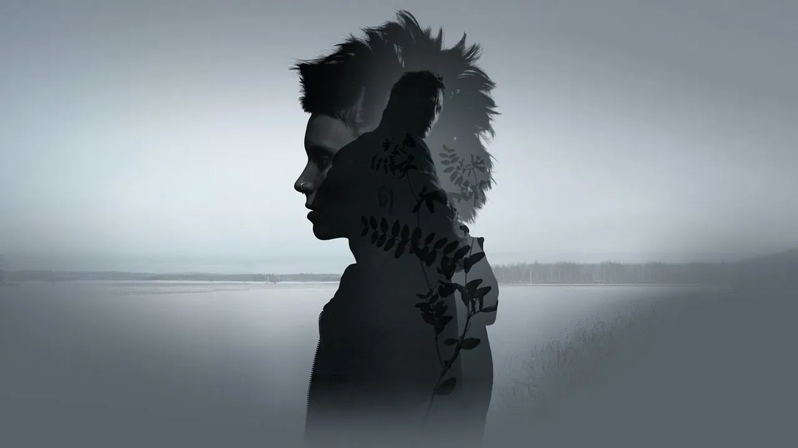
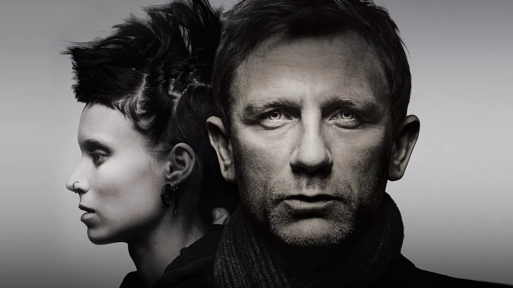
导演与主创 · 他们的历史作品

 搏击俱乐部
搏击俱乐部 七宗罪
七宗罪 消失的爱人
消失的爱人 本杰明·巴顿奇事
本杰明·巴顿奇事
 007：大破天幕杀机
007：大破天幕杀机 利刃出鞘
利刃出鞘 007：大战皇家赌场
007：大战皇家赌场 007：幽灵党
007：幽灵党 新猛鬼街
新猛鬼街 社交网络
社交网络短评（轻微剧透）
轻微剧透：真正的转折不在「凶手是谁」，在莎兰德为什么会帮他。一个在查别人的家族史，一个正在被国家系统合法地伤害——芬奇把两条线剪在一起，让「制度性的恶」和「家庭里的恶」互相照明。中段那场戏是这部片最难看也最必要的一段：它不是为了刺激，是为了说明在莎兰德的世界里，法律从来没站在她这边。结尾她把钱转走、看着布隆克维斯特离开，那一下比任何复仇都冷。
为什么值得一看
想看近二十年制作最精良的冷案调查片的人；喜欢《十二宫》《消失的爱人》这类芬奇式程序的观众。含性暴力、酷刑与裸露镜头，是本片最需要预警的部分（18+）。内地未映，流媒体可看。看完想继续：《十二宫》《消失的爱人》《七宗罪》。
釜山行 Train to Busan
「爸爸，你只在乎你自己。」
剧情梗概
基金经理石宇把工作排在第一位。女儿秀安生日这天，他带她坐上开往釜山的 KTX 去看妈妈。列车发车前，一名带伤的少女冲上车，然后整列车开始失控。四百多公里的路，乘客要穿过一节又一节车厢。
亮点
- 延尚昊从动画导演转真人片的第一部；前传动画《首尔站》与它同年上映。
- 韩国观影人次 1156 万，是韩国影史第 14 部「千万电影」，版权卖到 156 个国家和地区。
- 丧尸的动作由舞蹈家 Jein Park 做形体训练——这也是它们跑得比传统丧尸快得多的原因。
- 全片几乎都在列车里完成，密闭空间加高速移动的设定被用到极致。
- 马东石演的相华是全片的泄压阀，他那场牺牲戏是当年被讨论最多的一段。
- 烂番茄 94% / 豆瓣 8.5；入围第 69 届戛纳午夜展映单元。
导演与主创 · 他们的历史作品

 釜山行2：半岛
釜山行2：半岛 贞伊
贞伊 首尔站
首尔站
 徐福
徐福 嫌疑人
嫌疑人 永恒族
永恒族短评（轻微剧透）
轻微剧透：真正的转折在车厢门。延尚昊很清楚自己拍的不是丧尸片，是「谁被允许进来」——每一次关门都是一次选择：救还是不救，信还是不信。石宇从头到尾教女儿的是「你要先管好自己」，而最后他学会的正是把这一课推翻。结尾他站在车尾，脑子里剩下的不是丧尸，是女儿出生的画面——这一下把整部片从灾难片拉成了公路片：他不是在逃生，他是在还债。它确实有煽情和套路，豆瓣 8.5 里有一部分是「第一次在银幕上看到亚洲丧尸」的加成，但那节车厢的设计至今没人做得更好。
为什么值得一看
想看近十年最有效的密闭空间恐怖片的人；能接受大量跳吓、血腥与角色死亡的观众。含撕咬、坠车与丧尸群戏，紧张感持续，无性内容。内地未映，流媒体可看。看完想继续：《首尔站》《半岛》《活埋》。
降临 Arrival
「如果你已经知道结局，你还会这样走一遍吗？」
剧情梗概
十二艘贝壳状飞船停在地球十二个国家的上空。军方找来语言学家露易丝·班克斯和物理学家伊恩，让他们搞清楚两件事：它们从哪来，来干什么。露易丝进入飞船，开始学一种没有先后、同时写满一个圆环的文字。
亮点
- 维伦纽瓦执导，改编自华裔作家特德·姜的雨果奖中篇《你一生的故事》——曾被公认为「不可能影像化」。
- 第 89 届奥斯卡八项提名，拿下最佳音效剪辑；编剧埃里克·海瑟尔磨了六年剧本。
- 「七肢桶」的环形文字由设计团队专门开发，是一套有完整语法的书写系统，不是随手画的墨团。
- 全片几乎没有动作场面，科幻设定靠语言学而不是物理学推进。
- 内地 2017-01-20 公映，是维伦纽瓦第一部被引进内地的作品。
- 烂番茄 94% / Metacritic 81，但豆瓣只有 7.8——影评界与国内观众的落差是本期第三大的。
导演与主创 · 他们的历史作品

 银翼杀手2049
银翼杀手2049 沙丘
沙丘 囚徒
囚徒 边境杀手
边境杀手
 超人：钢铁之躯
超人：钢铁之躯 魔法奇缘
魔法奇缘 正义联盟
正义联盟
 韩赛尔与格蕾特：女巫猎人
韩赛尔与格蕾特：女巫猎人 复仇者联盟
复仇者联盟 拆弹部队
拆弹部队 谍影重重4
谍影重重4短评（轻微剧透）
轻微剧透：真正的转折在露易丝意识到那些「闪回」不是回忆。她学会七肢桶的文字之后，时间对她来说不再是线性的——那些片段是未来，而她一直以为那是过去。维伦纽瓦最了不起的地方是他没有把这个设定拍成炫技，而是拍成了一个选择：明知这条路通向哪里，还是走上去。结尾她握着伊恩的手说「我愿意」，那句话和后面所有的事是同时发生的。它常被说「太平、太冷」，可这份平正是它的主题——当你能同时看到开头和结尾，情绪就不再有起伏，只剩下接受。
为什么值得一看
想看近年最安静的科幻、以及语言学 × 自由意志这一支的人；适合愿意慢下来、接受没有爆炸场面的观众。无血腥暴力，含少量紧张与危机场面；概念密度高，第一遍建议不分心。内地公映过，流媒体可看。看完想继续：《银翼杀手2049》《星际穿越》《2001太空漫游》。
水形物语 The Shape of Water
「我看着它，它看着我，我们没有区别。」
剧情梗概
1962 年的巴尔的摩，哑女艾丽莎在政府实验室做清洁工，每天的生活是煮蛋、泡澡、上班。某天实验室运来一只从南美抓回的半人半鱼生物，军方想把它剖开研究。艾丽莎偷偷给它带鸡蛋、放唱片、教它手语——然后决定把它带出去。
亮点
- 德尔·托罗自编自导自制片；第 90 届奥斯卡 13 项提名、4 项获奖：最佳影片、最佳导演、最佳配乐、最佳艺术指导；另获威尼斯金狮奖。
- 成本约 1950 万美元，全球票房约 1.95 亿美元。
- 两栖人由道格·琼斯穿实体戏服表演，全程没有用动作捕捉替代。
- 全片主色是绿与青——连办公室、走廊和雨夜都泡在水里，是近年最统一的美术设计之一。
- 莎莉·霍金斯全程无台词，靠手语、眼神与身体节奏演完整部片。
- 豆瓣 7.2 与烂番茄 92% / Metacritic 87 的落差，是本期最大的一部。
导演与主创 · 他们的历史作品

 环太平洋
环太平洋 潘神的迷宫
潘神的迷宫 地狱男爵
地狱男爵 地狱男爵2：黄金军团
地狱男爵2：黄金军团
 蓝色茉莉
蓝色茉莉 哥斯拉
哥斯拉 帕丁顿熊
帕丁顿熊 帕丁顿熊2
帕丁顿熊2 超人：钢铁之躯利刃出鞘
超人：钢铁之躯利刃出鞘 午夜逃亡
午夜逃亡短评（轻微剧透）
轻微剧透：真正的转折不在实验室，在浴室。艾丽莎把它放进自己家的浴缸、往水里倒盐，那场戏之后，这部片就从「救人」变成了「共同生活」。德尔·托罗做了一件很朴素的事：他让所有能说话的人（将军、反派、科学家）都显得可笑，让两个不会说话的成为唯一真正交流的一对。最后是它替她治好了脖子上的伤，然后她在水里睁开眼睛——这一下把「怪物救人」的童话反转成了「人被接纳」。它确实有情节好猜、反派扁平的问题，豆瓣 7.2 不是没有理由；但当德斯普拉的那段旋律响起来、两个人在水下拥抱的时候，你会发现它讲的是一件很小的事：被看见一次，就够了。
为什么值得一看
想看近年美术与配乐最完整的一部、以及「怪物电影也可以是温柔的」的人；喜欢《潘神的迷宫》《环太平洋》这类德尔·托罗作品的观众。含暴力、血腥与裸露镜头（美国 R 级），情绪基调温柔。内地 2018-03-16 公映过（有删减），流媒体可看。看完想继续：《潘神的迷宫》《地狱男爵》《弗兰肯斯坦》。